Nintendo Switch 2 Home Screen Redesign
A wireframe and low- and high-fidelity Figma prototypes of the Switch 2 HOME Menu, with every change drawn from usability-test findings and grounded in human factors engineering (HFE) principles.
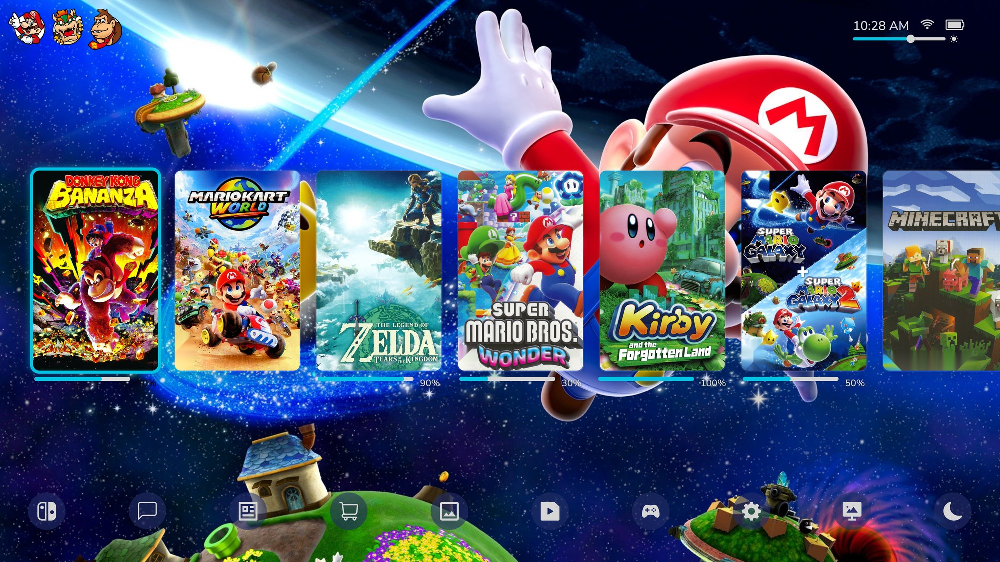
- Course
- ISE 5654: Human Factors System Design
- Instructor
- Dr. Deborah Dickerson
- My role
- Wireframe & prototype designer
- Team
- Joseph Brazina, Arsalan Ashraf & Jyotshna Bali
- Date
- Oct 2026
I designed the wireframe and both interactive prototypes, and wrote the report’s prototyping, HFE principles, findings, and redesign sections. My teammates led the design description and the usability testing.
The original HOME Menu
The HOME Menu is the hub players return to between games, so it has to stay legible whether the console is handheld, on a table, or docked to a TV. It’s already minimal and user-first.
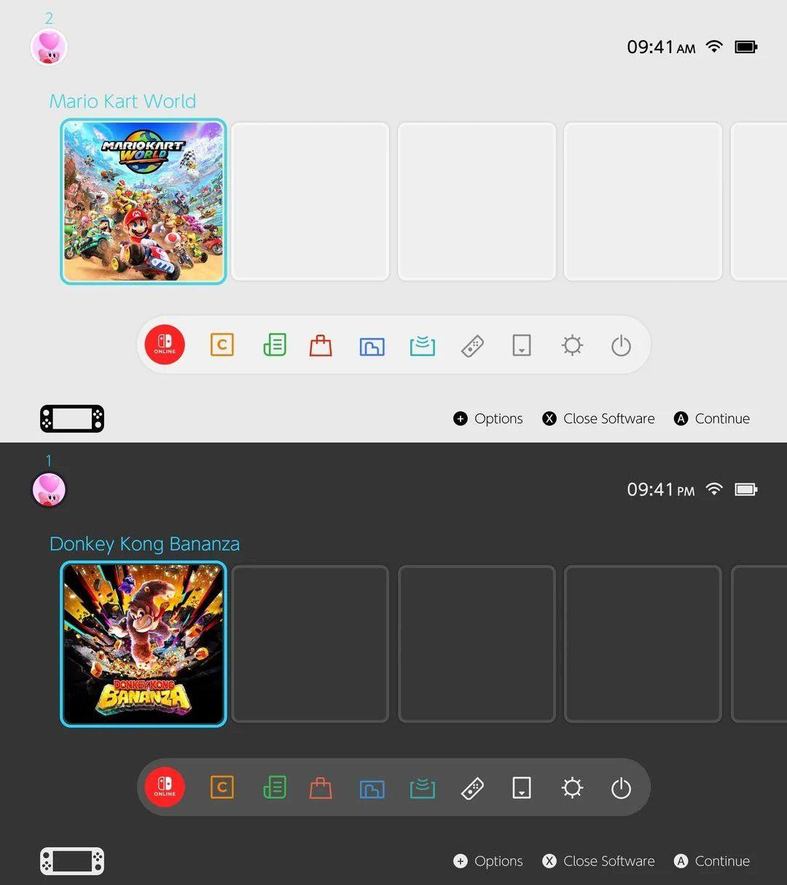
Note. From Iggy (2025), as reported by Nintendo Soup; may not reflect the official interface. Nintendo Switch 2 © Nintendo.
The redesign keeps what the original already does well:
- Clear cursor locationA cyan frame always shows what’s selected.
- Button promptsCues like “Ⓐ Continue” remind players which button does what.
- Games come firstGame cards are the most salient element, in the user’s focal vision.
- Status at a glanceWi-Fi and battery are always visible in the top right.
What testing found, and what I changed
The team tested two participants, a novice and an expert. Each did five tasks in handheld mode while thinking aloud, then filled out the System Usability Scale (SUS). Both scored 75, but the novice struggled with unlabeled icons, while the expert wanted faster controls and more personalization.
| Test finding | Prototype change |
|---|---|
| Game icons should look like physical game cases, and be larger. | Full portrait cover-art game cards replace the small square icons. |
| The title above each icon is redundant. | The cover art carries the title, so there’s no separate label. |
| Brightness should be adjustable from the home screen. | A brightness slider sits with the Wi-Fi, battery, and time in the top right. |
| Unlabeled icons were unclear, and the bottom icons were too small. | A wider, full-width navigation bar on the bottom edge, with larger buttons closer to the thumbs. |
| The home screen should be customizable around favorite games. | Four Nintendo-themed home screens (Mario, Zelda, Kirby, Donkey Kong) alongside Light and Dark. |
Both participants were team members, so these findings are preliminary rather than generalizable.
How I built it
-
Wireframe
I laid out the redesign as a static grayscale wireframe on a 1920 × 1080 frame: the home screen, the theme picker, and the Mario theme applied. Arrows show the flow between screens, and eight numbered notes explain each change.
The annotated wireframe. Open full size -
Lo-fi prototype
I added a Mario version of the home screen and theme picker, labeled every placeholder, and wired the screens together in Figma. The game row scrolls, Themes opens the picker, choosing a theme switches the home screen, and Ⓑ Back or tapping outside closes it.
Lo-fi home screens and theme pickers for the Light and Mario themes. Try the lo-fi prototype in Figma -
Hi-fi prototype
I replaced the placeholders with real cover art (console branding and age ratings removed), Iconify nav icons, and actual Switch 2 profile icons, and added an All Software tile to end the game row. One cyan accent marks the selection frame, progress bars, and brightness slider.
All six themes share one layout. Only the colors and background change, so I tuned each theme’s contrast separately.
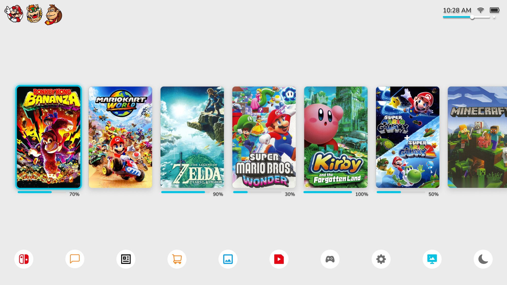
Home screen 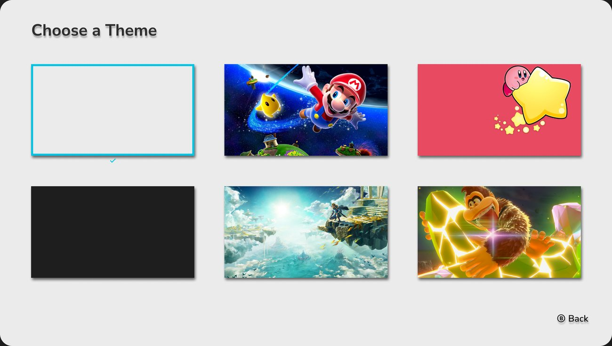
Theme picker, current theme marked with a cyan frame and ✓ The system default: a light gray background, black text and status icons, and white nav buttons with colored icons.
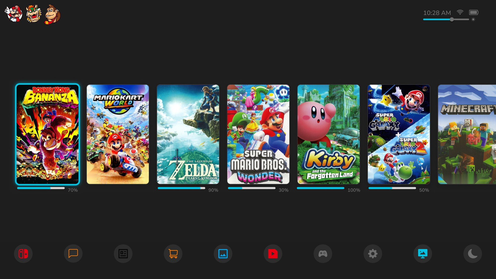
Home screen 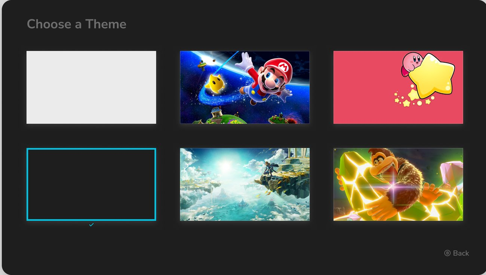
Theme picker, current theme marked with a cyan frame and ✓ A dark gray background with light gray text. The nav buttons turn dark gray, and their icons keep their colors.
Home screen 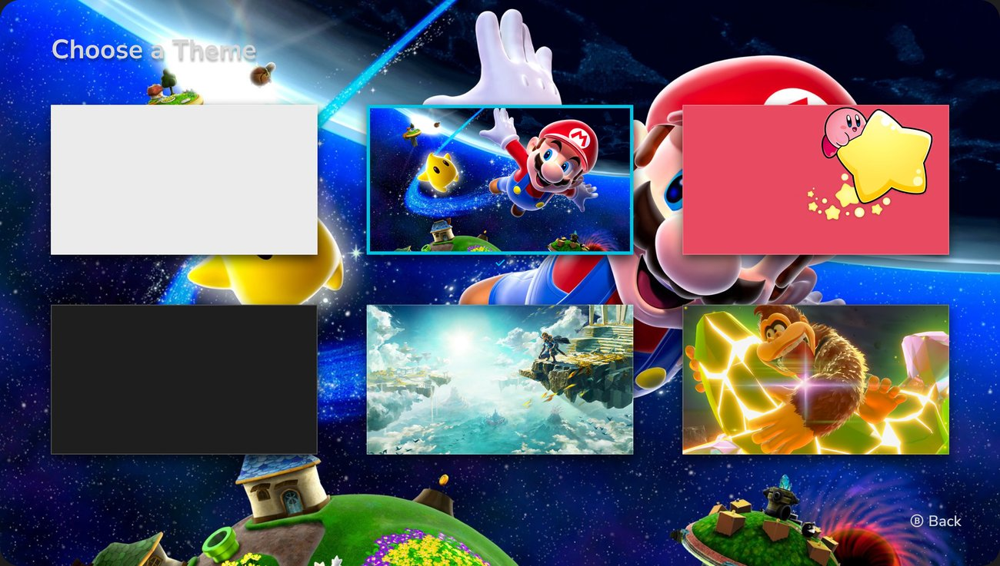
Theme picker, current theme marked with a cyan frame and ✓ Super Mario Galaxy art with light gray text and dark blue nav buttons at reduced opacity, so the background shows through.
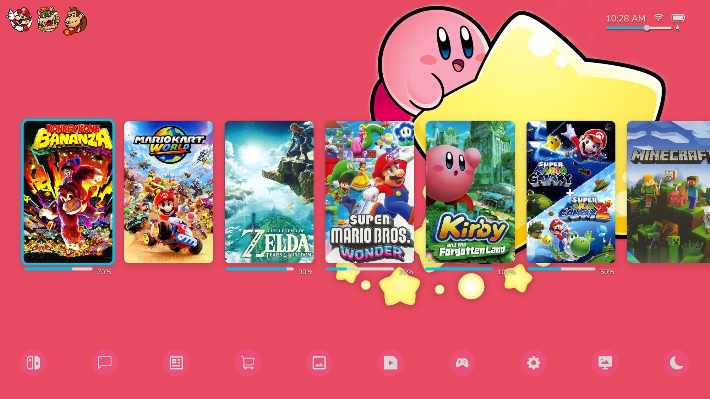
Home screen 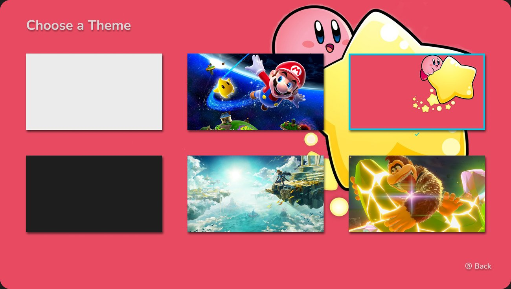
Theme picker, current theme marked with a cyan frame and ✓ Kirby art with light gray text and pink nav buttons at reduced opacity.
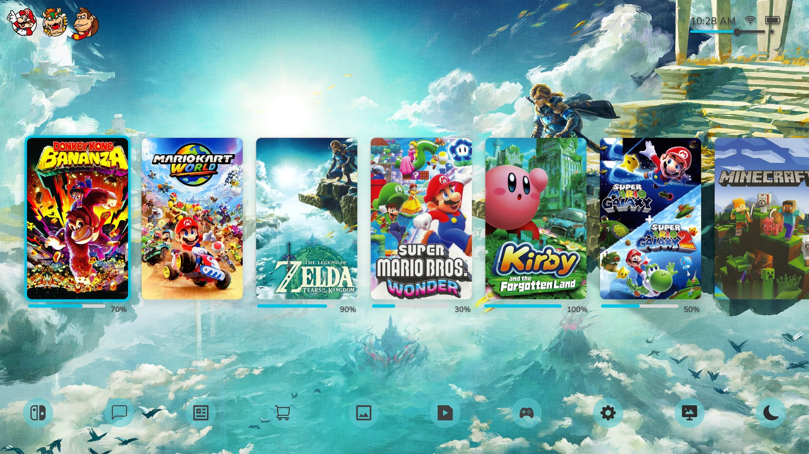
Home screen 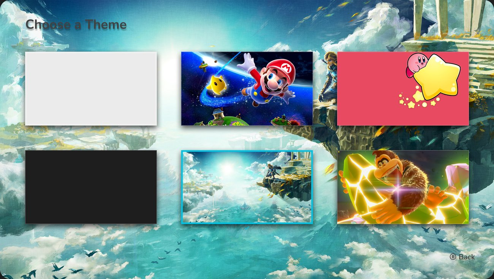
Theme picker, current theme marked with a cyan frame and ✓ Tears of the Kingdom art with dark gray text, buttons, and icons.
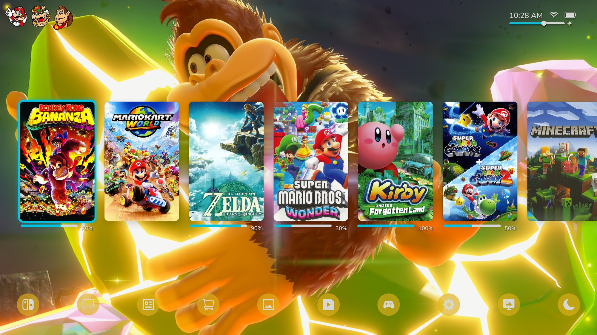
Home screen 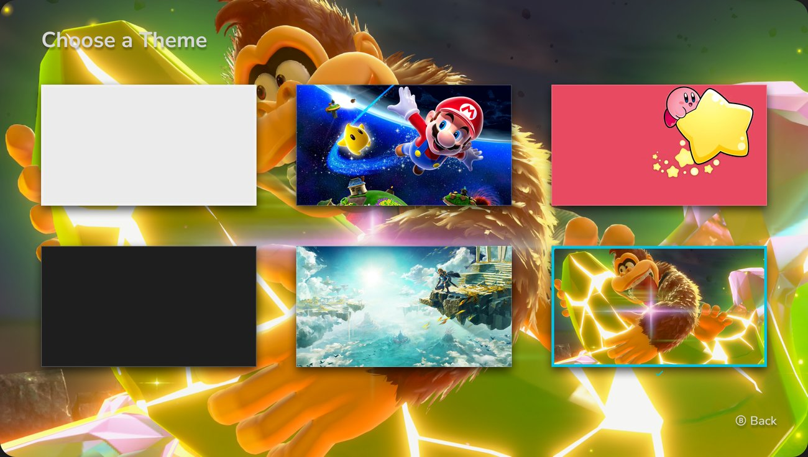
Theme picker, current theme marked with a cyan frame and ✓ Donkey Kong Bananza art with light gray text and yellow nav buttons at reduced opacity.
Note. Cover images adapted from Jerry88pl (n.d.), megasnorlax (n.d.-a, n.d.-b, n.d.-c, n.d.-d), Nutsacc (n.d.), and SirRandall (n.d.); background images from Dean (2025), Kirby HD Wallpaper (n.d.), Nintendo (n.d.-b), and Super Mario World Wallpaper (n.d.); profile icons from Random Talking Bush (2017). Original artwork © Nintendo; Kirby artwork © Nintendo/HAL Laboratory, Inc.; Minecraft © Mojang AB/Microsoft.
Try it. Scroll the game row, open the theme picker with the Themes button (the desktop icon), and switch between all six themes.
Open the hi-fi prototype in Figma
Why each change works
Every change rests on an established HFE principle. Together they aim for faster game selection, easier thumb reach, fewer trips into System Settings, and a home screen players can make their own.
| Design choice | HFE principles | How it helps |
|---|---|---|
| Full cover-art game cards | Fitts’ law; visual hierarchy; recognition over recall | Larger targets are faster to tap, and familiar box art is spotted rather than read. |
| Wider bottom nav bar | Fitts’ law; thumb reach on handheld touchscreens | Bigger buttons sit closer to the thumbs and apart from the game row. |
| Home-screen brightness slider | Information access cost; functional grouping; compatible mapping | A frequent adjustment no longer needs System Settings, and left dims while right brightens. |
| Story progress bars | Knowledge in the world; proximity compatibility; redundancy gain | Progress shows without opening the game, right beneath it, with a percentage as backup. |
| Cyan selection frame, glows, shadows, and per-theme nav colors | Attentional salience; figure-ground segregation; luminance contrast | The cursor is easy to find, and covers and buttons stay distinct on every background. |
| Themed home screens with image previews | Personalization; aesthetic-usability effect; consistency; recognition over recall | Players personalize their console, the fixed layout keeps spatial memory intact, and previews show each theme. |
| Cyan frame and ✓ on the current theme; Ⓑ Back or tap outside | Redundancy gain; discriminability; user control and freedom | Two cues mark the selection, and there are two quick ways back to the home screen. |
| All Software tile | Signifiers; visibility of system status | The grid icon signals the full library and shows where the row ends. |
Note. Principles drawn from Fitts (1954), MacKenzie (1992), Bergstrom-Lehtovirta and Oulasvirta (2014), Wickens et al. (2022), Wickens and Carswell (1995), Nielsen (1994), Norman (2013), Sanders and McCormick (1993), Blom and Monk (2003), Kurosu and Kashimura (1995), Tractinsky et al. (2000), and Wagemans et al. (2012).
Trade-offs and next steps
Prototyping showed me how well designed the original already is, which made real pain points hard to find. Building interactive prototypes instead of static mockups let me see how each element would behave before implementation. Each change also has a cost worth weighing against Nintendo’s minimalist design language.
| Change | Risk | Possible fix |
|---|---|---|
| Nintendo-themed home screens | Busy backgrounds add clutter and cognitive load (Sweller, 1988). | Simpler backgrounds, which also sharpen the edges of cards and buttons and keep the game row the focal point. |
| Theme-matched nav buttons | Buttons colored like the background lose salience. | Nav colors that contrast with each background. |
| Home-screen brightness slider | Clutter for players who use auto-brightness. | A setting to show or hide the slider. |
| Theme picker pop-up | Only six themes fit at once. | A larger pop-up if more themes are added. |
Next step: run a usability test on the hi-fi prototype to confirm whether each HFE principle actually improves the experience, and decide which changes to keep, adjust, or remove.
Sources Show all 45Hide
- Bergstrom-Lehtovirta, J., & Oulasvirta, A. (2014). Modeling the functional area of the thumb on mobile touchscreen surfaces. In Proceedings of the SIGCHI Conference on Human Factors in Computing Systems (pp. 1991–2000). ACM. https://doi.org/10.1145/2556288.2557354
- Blom, J. O., & Monk, A. F. (2003). Theory of personalization of appearance: Why users personalize their PCs and mobile phones. Human–Computer Interaction, 18(3), 193–228. https://doi.org/10.1207/S15327051HCI1803_1
- Dean, I. (2025, July 18). Donkey Kong Bananza review: Switch 2 finally has its must-play system seller [Image]. Creative Bloq. https://www.creativebloq.com/entertainment/gaming/donkey-kong-bananza-review-switch-2-finally-has-its-must-play-system-seller
- Figma. (n.d.-a). Apply effects to layers. Figma Learn – Help Center. Retrieved October 3, 2026, from https://help.figma.com/hc/en-us/articles/360041488473-Apply-effects-to-layers
- Figma. (n.d.-b). Create overlays in your prototypes. Figma Learn – Help Center. Retrieved October 3, 2026, from https://help.figma.com/hc/en-us/articles/360039818254-Create-overlays-in-your-prototypes
- Figma. (n.d.-c). Guide to prototyping in Figma. Figma Learn – Help Center. Retrieved October 3, 2026, from https://help.figma.com/hc/en-us/articles/360040314193-Guide-to-prototyping-in-Figma
- Figma. (n.d.-d). Prototype scroll and overflow behavior. Figma Learn – Help Center. Retrieved October 3, 2026, from https://help.figma.com/hc/en-us/articles/360039818734-Prototype-scroll-and-overflow-behavior
- Figma. (n.d.-e). What is wireframing? Figma Resource Library. Retrieved October 10, 2026, from https://www.figma.com/resource-library/what-is-wireframing/
- Fitts, P. M. (1954). The information capacity of the human motor system in controlling the amplitude of movement. Journal of Experimental Psychology, 47(6), 381–391. https://doi.org/10.1037/h0055392
- Iconify. (n.d.). Iconify [Figma plugin]. Figma Community. https://www.figma.com/community/plugin/735098390272716381/iconify
- Iggy. (2025, May 6). Nintendo Switch 2 to launch with two system themes [Image of light and dark home menu themes]. Nintendo Soup. https://nintendosoup.com/nintendo-switch-2-to-launch-with-two-system-themes/
- Jerry88pl. (n.d.). Super Mario Galaxy + Super Mario Galaxy 2 [Cover image]. The Cover Project. https://www.thecoverproject.net/view.php?game_id=19903
- Kirby HD wallpaper: A starry adventure awaits [Wallpaper]. (n.d.). Wallpaper Abyss. https://wall.alphacoders.com/big.php?i=317170
- KirbyFan932. (n.d.). Super Mario Odyssey [Cover image]. The Cover Project. https://www.thecoverproject.net/view.php?game_id=9843
- Kortum, P. (2008). HCI beyond the GUI: Design for haptic, speech, olfactory, and other nontraditional interfaces. Morgan Kaufmann.
- Kurosu, M., & Kashimura, K. (1995). Apparent usability vs. inherent usability: Experimental analysis on the determinants of the apparent usability. In Conference Companion on Human Factors in Computing Systems (pp. 292–293). ACM. https://doi.org/10.1145/223355.223680
- lenoxseer. (n.d.). The Legend of Zelda: Link’s Awakening – Nintendo Switch [Cover image]. The Cover Project. https://www.thecoverproject.net/view.php?game_id=10120
- LoganGamer20. (n.d.). Super Mario 3D World + Bowser’s Fury [Cover image]. The Cover Project. https://www.thecoverproject.net/view.php?game_id=14884
- MacKenzie, I. S. (1992). Fitts’ law as a research and design tool in human–computer interaction. Human–Computer Interaction, 7(1), 91–139. https://doi.org/10.1207/s15327051hci0701_3
- Martin, B., & Hanington, B. (2019). Universal methods of design, expanded and revised: 125 ways to research complex problems, develop innovative ideas, and design effective solutions. Rockport Publishers.
- megasnorlax. (n.d.-a). Donkey Kong Bananza [Cover image]. The Cover Project. https://www.thecoverproject.net/view.php?cover_id=30726
- megasnorlax. (n.d.-b). The Legend of Zelda: Tears of the Kingdom [Cover image]. The Cover Project. https://www.thecoverproject.net/view.php?cover_id=24720
- megasnorlax. (n.d.-c). Minecraft [Cover image]. The Cover Project. https://www.thecoverproject.net/view.php?game_id=14828
- megasnorlax. (n.d.-d). Super Mario Bros. Wonder [Cover image]. The Cover Project. https://www.thecoverproject.net/view.php?game_id=18500
- megasnorlax. (n.d.-e). Super Smash Bros. Ultimate [Cover image]. The Cover Project. https://www.thecoverproject.net/view.php?game_id=14841
- Nielsen, J. (1994). Enhancing the explanatory power of usability heuristics. In Proceedings of the SIGCHI Conference on Human Factors in Computing Systems (pp. 152–158). ACM. https://doi.org/10.1145/191666.191729
- Nintendo. (n.d.-a). The Legend of Zelda: Ocarina of Time – Nintendo Switch 2 [Cover image]. GameStop. https://www.gamestop.com/video-games/nintendo-switch-2/products/the-legend-of-zelda-ocarina-of-time---nintendo-switch-2/20036066.html
- Nintendo. (n.d.-b). The Legend of Zelda: Tears of the Kingdom [Key art]. https://zelda.com/assets/img/tears/keyArt_desktop.jpg
- Nintendo of America. (n.d.). Nintendo Switch 2 system [Image of the console in handheld mode]. https://www.nintendo.com/us/store/products/nintendo-switch-2-system-123669/
- Nintendo of America. (2025a). Nintendo Switch 2 HOME Menu overview and Accessibility settings. Nintendo Support. https://en-americas-support.nintendo.com/app/answers/detail/a_id/68181
- Nintendo of America. (2025b). Nintendo Switch 2 system and technical specifications. https://www.nintendo.com/us/gaming-systems/switch-2/tech-specs/
- Norman, D. A. (2013). The design of everyday things (Rev. and expanded ed.). Basic Books.
- Nutsacc. (n.d.). Kirby and the Forgotten Land [Cover image]. The Cover Project. https://www.thecoverproject.net/view.php?game_id=15137
- Random Talking Bush. (2017, July 12). Profile icons [Sprite sheet]. The Spriters Resource. https://www.spriters-resource.com/nintendo_switch/systembios/asset/93824/
- Salvendy, G., & Karwowski, W. (Eds.). (2021). Handbook of human factors and ergonomics (5th ed.). Wiley.
- Sanders, M. S., & McCormick, E. J. (1993). Human factors in engineering and design (7th ed.). McGraw-Hill.
- SirRandall. (n.d.). Mario Kart World [Cover image]. The Cover Project. https://www.thecoverproject.net/view.php?cover_id=30716
- Super Mario World wallpaper [Wallpaper]. (n.d.). GetWallpapers. https://getwallpapers.com/collection/super-mario-world-wallpaper
- Sweller, J. (1988). Cognitive load during problem solving: Effects on learning. Cognitive Science, 12(2), 257–285. https://doi.org/10.1207/s15516709cog1202_4
- Ting, C. A. R., Mondragon, J. M., Almirante, J. I. F., Ramolete, G. I. L., Cohen, M. A. P. C., & Custodio, B. P. (2020). Usability and gaming experience assessment of the Nintendo Switch user interface by Filipino users. In T. Ahram & C. Falcão (Eds.), Advances in usability, user experience, wearable and assistive technology (pp. 777–783). Springer. https://doi.org/10.1007/978-3-030-51828-8_103
- Tractinsky, N., Katz, A. S., & Ikar, D. (2000). What is beautiful is usable. Interacting with Computers, 13(2), 127–145. https://doi.org/10.1016/S0953-5438(00)00031-X
- UXtweak. (n.d.). System usability scale [Blog post]. https://blog.uxtweak.com/system-usability-scale/
- Wagemans, J., Elder, J. H., Kubovy, M., Palmer, S. E., Peterson, M. A., Singh, M., & von der Heydt, R. (2012). A century of Gestalt psychology in visual perception: I. Perceptual grouping and figure–ground organization. Psychological Bulletin, 138(6), 1172–1217. https://doi.org/10.1037/a0029333
- Wickens, C. D., & Carswell, C. M. (1995). The proximity compatibility principle: Its psychological foundation and relevance to display design. Human Factors, 37(3), 473–494. https://doi.org/10.1518/001872095779049408
- Wickens, C. D., Helton, W. S., Hollands, J. G., & Banbury, S. (2022). Engineering psychology and human performance (5th ed.). Routledge. https://doi.org/10.4324/9781003177616
All game artwork, characters, and trademarks belong to their respective owners and are used here for non-commercial, educational portfolio purposes only.